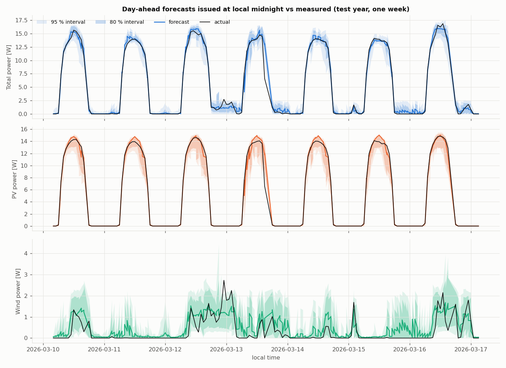
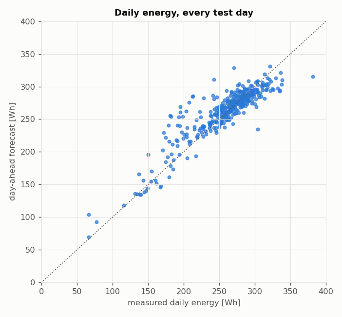
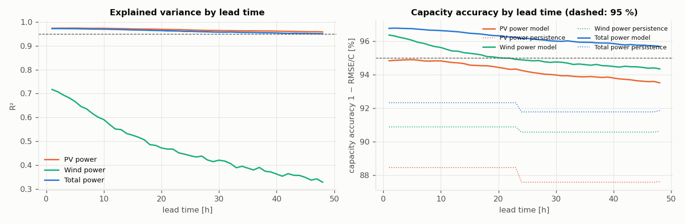
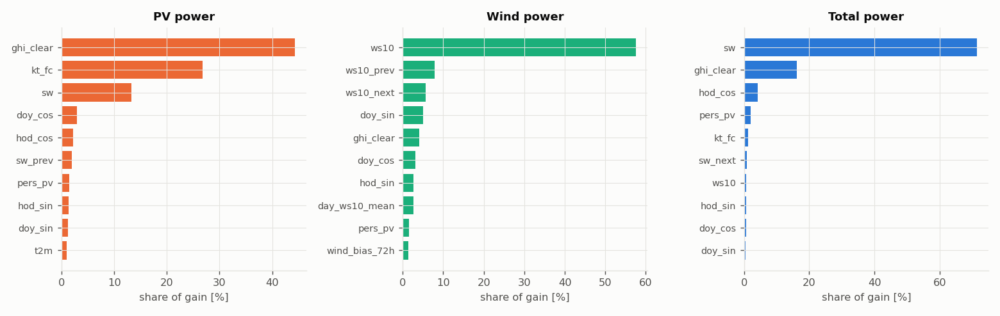

AeroSolar power forecast: evaluation
All data are simulated. The weather forecasts the model receives carry realistic errors (wind σ ≈ 1.3 m/s, irradiance σ ≈ 12 % at 24 h). They were not reduced to reach any target: they set the ceiling on what any model can achieve (see Information limit below). On the real turbine the model must be retrained on measured data.
Headline statistics (test year)
12 of 16 statistics are at or above 95 %. Every one is defined so it can be checked; the ones below 95 % are explained underneath.
| statistic | definition | value | ≥ 95 % |
|---|---|---|---|
| R², total power (day-ahead) | explained variance, hourly total | 96.8 % | yes |
| R², PV power (day-ahead) | explained variance, hourly PV | 97.2 % | yes |
| R², PV potential (day-ahead) | same, hours without curtailment | 97.8 % | yes |
| R², total potential (day-ahead) | same, total | 97.1 % | yes |
| Capacity accuracy, total (day-ahead) | 1 − RMSE / 30 W | 96.5 % | yes |
| Capacity accuracy, total potential (day-ahead) | 1 − RMSE / 30 W, no curtailment | 96.7 % | yes |
| Capacity accuracy, PV potential (day-ahead) | 1 − RMSE / 18 W, no curtailment | 95.2 % | yes |
| 95 % interval coverage, total (day-ahead) | share of actuals inside the 95 % band | 95.1 % | yes |
| 95 % interval coverage, PV (day-ahead) | same, PV | 97.1 % | yes |
| R², PV (rolling 1–24 h) | every hourly issue | 97.2 % | yes |
| R², total 5-min nowcast | next-5-min mean | 98.9 % | yes |
| Capacity accuracy, total 5-min nowcast | 1 − RMSE / 30 W | 98.0 % | yes |
| Daily energy accuracy, total (day-ahead) | mean over days of 1 − |ΔE|/E | 94.2 % | no |
| Daily energy accuracy, PV (day-ahead) | same, PV only | 92.7 % | no |
| Daytime accuracy, total (day-ahead) | 1 − Σ|err| / Σactual, hours ≥ 10 % cap | 91.9 % | no |
| R², wind power (day-ahead) | explained variance, hourly wind | 54.9 % | no |
Information limit (why some statistics stay below 95 %)
The same model was given the true hourly irradiance and wind (impossible in practice) and scored on the same test days. What it reaches is the ceiling set by everything the weather cannot explain (soiling, tracker error, battery curtailment, intra-hour turbulence):
| R² | capacity accuracy | daily energy accuracy | |
|---|---|---|---|
| PV: forecast model | 0.972 | 94.7 % | 92.7 % |
| PV: oracle (true weather) | 0.979 | 95.4 % | 95.0 % |
| Total: forecast model | 0.968 | 96.5 % | 94.2 % |
| Total: oracle (true weather) | 0.975 | 97.0 % | 95.6 % |
Daily energy accuracy is limited by how wrong a day-ahead irradiance forecast is over a whole day, and about 10 % of spring/summer PV energy is curtailed by a full battery (a dispatch decision, not weather). Wind depends on turbulence and gusts that no weather forecast can know a day ahead; the electrical cut-in (~4.5 m/s) and the 200 rpm overspeed brake make power very sensitive to small wind errors. Wind is ~10 % of the energy, so the total is dominated by PV.

Day-ahead (issued at local midnight, next 24 h)
| PV power | Wind power | Total power | PV potential | Total potential | |
|---|---|---|---|---|---|
| MAE [W] | 0.42 | 0.33 | 0.59 | 0.37 | 0.57 |
| RMSE [W] | 0.96 | 0.55 | 1.04 | 0.87 | 1.00 |
| R² | 0.972 | 0.549 | 0.968 | 0.978 | 0.971 |
| capacity acc. (RMSE) | 94.7 % | 95.4 % | 96.5 % | 95.2 % | 96.7 % |
| capacity acc. (MAE) | 97.6 % | 97.2 % | 98.0 % | 98.0 % | 98.1 % |
| daytime acc. | 91.5 % | 62.5 % | 91.9 % | 92.8 % | 92.4 % |
| daily energy acc. | 92.7 % | -3897.4 % | 94.2 % | — | — |
| skill vs persistence | 45.5 % | 54.2 % | 55.5 % | 52.0 % | 56.2 % |
| skill vs climatology | 44.0 % | 45.7 % | 45.5 % | 50.0 % | 46.4 % |
| 80 % coverage | 91.8 % | 80.5 % | 83.0 % | 91.9 % | 82.9 % |
| 95 % coverage | 97.1 % | 95.6 % | 95.1 % | 96.9 % | 95.4 % |
| 95 % width [W] | 2.03 | 1.36 | 2.89 | 1.73 | 2.74 |
Measured energy per test day: 130.6 Wh (PV 116.7 Wh, wind 14.0 Wh); mean absolute daily error 6.79 Wh over 365 days. Potential products are scored only on hours without curtailment.

Rolling forecasts (every hourly issue, leads 1–24 h)
| PV power | Wind power | Total power | PV potential | Total potential | |
|---|---|---|---|---|---|
| MAE [W] | 0.42 | 0.33 | 0.60 | 0.37 | 0.58 |
| RMSE [W] | 0.96 | 0.54 | 1.04 | 0.87 | 1.00 |
| R² | 0.972 | 0.566 | 0.968 | 0.978 | 0.971 |
| capacity acc. (RMSE) | 94.7 % | 95.5 % | 96.5 % | 95.2 % | 96.7 % |
| capacity acc. (MAE) | 97.6 % | 97.2 % | 98.0 % | 98.0 % | 98.1 % |
| daytime acc. | 91.5 % | 62.9 % | 91.8 % | 92.7 % | 92.3 % |
| daily energy acc. | — | — | — | — | — |
| skill vs persistence | 46.0 % | 54.6 % | 55.6 % | 52.2 % | 56.2 % |
| skill vs climatology | 44.0 % | 46.1 % | 45.4 % | 49.9 % | 46.2 % |
| 80 % coverage | 91.7 % | 80.0 % | 82.5 % | 91.8 % | 82.2 % |
| 95 % coverage | 97.2 % | 95.3 % | 95.1 % | 97.0 % | 95.3 % |
| 95 % width [W] | 2.02 | 1.36 | 2.89 | 1.73 | 2.75 |

By month (day-ahead total)
| month | daily energy accuracy | R² |
|---|---|---|
| 1 | 91.9 % | 0.955 |
| 2 | 95.3 % | 0.986 |
| 3 | 96.5 % | 0.974 |
| 4 | 93.2 % | 0.953 |
| 5 | 94.0 % | 0.971 |
| 6 | 93.0 % | 0.951 |
| 7 | 93.7 % | 0.964 |
| 8 | 95.1 % | 0.964 |
| 9 | 94.5 % | 0.974 |
| 10 | 94.1 % | 0.976 |
| 11 | 95.7 % | 0.975 |
| 12 | 93.4 % | 0.975 |
5-minute nowcast
| PV power | Wind power | Total power | |
|---|---|---|---|
| MAE [W] | 0.027 | 0.286 | 0.303 |
| R² | 0.999 | 0.690 | 0.989 |
| capacity accuracy (RMSE) | 99.2 % | 95.1 % | 98.0 % |
| skill vs persistence | 57.9 % | 34.4 % | 36.9 % |
| skill vs smart persistence | 85.5 % | — | 46.7 % |
What the models rely on

Method
- Inputs: Open-Meteo-style forecast (10 m wind, shortwave radiation, temperature) with hour-before/after, daily and cumulative context; clear-sky geometry; observations up to the issue time (last-hour power, battery state, 72 h PV yield vs clear sky for soiling, 72 h measured/forecast wind ratio for NWP bias, same-hour persistence); lead time.
- Models: 3-seed LightGBM ensembles per product, early-stopped on the calibration days; PV learned as a clear-sky index; night PV fixed at zero.
- Intervals: conformalized quantile regression per lead block (1–6, 7–24, 25–48 h), calibrated on held-out 2025 days.
- Model choices (features, clear-sky normalisation, potential vs delivered) were made on 2025 data only.
- No leakage: features only use the forecast issued at the issue time and hours that ended by then (
tests/test_forecast.py).